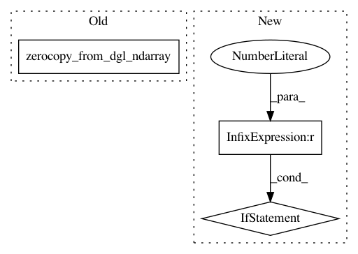

d27b4859127f4a45afd52fea70b1b5bc60d1affd,python/dgl/transform.py,,remove_edges,#Any#Any#,900
Before Change
new_graph = DGLHeteroGraph(new_graph_index, g.ntypes, g.etypes)
for i, canonical_etype in enumerate(g.canonical_etypes):
new_graph.edges[canonical_etype].data[EID] = F.zerocopy_from_dgl_ndarray(
induced_eids_nd[i].data)
return new_graph
def in_subgraph(g, nodes):
After Change
new_graph = DGLHeteroGraph(new_graph_index, g.ntypes, g.etypes)
for i, canonical_etype in enumerate(g.canonical_etypes):
data = induced_eids_nd[i].data
if len(data) == 0:
// Empty means that no edges are removed and edges are not shuffled.
new_graph.edges[canonical_etype].data[EID] = F.arange(
0, g.number_of_edges(canonical_etype))
else:
new_graph.edges[canonical_etype].data[EID] = F.zerocopy_from_dgl_ndarray(data)
return new_graph
def in_subgraph(g, nodes):
Extract the subgraph containing only the in edges of the given nodes.
In pattern: SUPERPATTERN
Frequency: 3
Non-data size: 3
Instances
Project Name: dmlc/dgl
Commit Name: d27b4859127f4a45afd52fea70b1b5bc60d1affd
Time: 2020-03-22
Author: coin2028@hotmail.com
File Name: python/dgl/transform.py
Class Name:
Method Name: remove_edges
Project Name: dmlc/dgl
Commit Name: 18a26fcfb1983af7fba69db9bdce7ba5e6a9945f
Time: 2020-06-29
Author: VoVAllen@users.noreply.github.com
File Name: python/dgl/data/graph_serialize.py
Class Name:
Method Name: load_graphs
Project Name: dmlc/dgl
Commit Name: 18a26fcfb1983af7fba69db9bdce7ba5e6a9945f
Time: 2020-06-29
Author: VoVAllen@users.noreply.github.com
File Name: python/dgl/data/graph_serialize.py
Class Name:
Method Name: load_labels